Boo at the Zoo
Weekends Oct 24 – Oct 31 · 10 am – 3 pm
Sacramento Zoo, Sacramento
Trick-or-treat stations throughout the zoo, costume parade, keeper talks and animal enrichment activities. Included with regular admission; costumes encouraged.
41 places, nearest first.
Regular weekly events — markets, storytimes, open gyms
Filter events
Times come from what each organiser publishes — a fixed weekly slot for markets and open gyms, a per-date listing for library storytimes. Schedules change and sessions get cancelled, so confirm with the venue before you set out.
View full calendar →Pumpkin patches, haunted trails & more near Citrus Heights
Weekends Oct 24 – Oct 31 · 10 am – 3 pm
Sacramento Zoo, Sacramento
Trick-or-treat stations throughout the zoo, costume parade, keeper talks and animal enrichment activities. Included with regular admission; costumes encouraged.
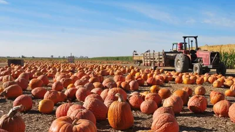
Weekends Oct 3 – Oct 31 · 10 am – 5 pm
Dave's Pumpkin Patch, West Sacramento
Family pumpkin patch with corn maze, hay rides, petting zoo and giant slides. Free admission; activities priced individually. Close to downtown Sacramento.
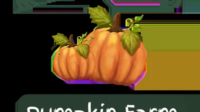
Sep 30 – Nov 1 · 11 am – 6 pm
Keema's Pumpkin Farm, Elk Grove
Family pumpkin farm in Elk Grove: u-pick pumpkins, corn maze, farm animals, playground and jumping pillow. Tue–Fri 11am–6pm, Sat–Sun 10am–6pm (Oct 31–Nov 1: 10am–4pm); closed Mondays. Cash only: adults 13+ $8, kids 2–12 $6, under 2 free.
Open year-round, closest first
Filter places
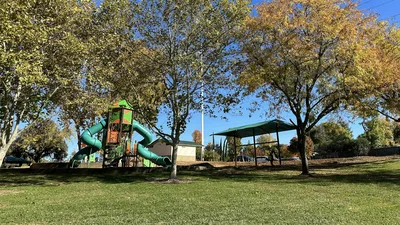
Citrus Heights
Two play areas and swings with restrooms and covered picnic, set among big trees and creek trails.
Open · Last checked Sep 17, 2026
Before you go The playground itself is unshaded — the trees are along the trails.
Citrus Heights
6,000 sq ft with a two-level jungle gym, toddler zone and pretend kitchen and store.
Open · Last checked Sep 17, 2026
Before you go Ages 0–8; popular party venue, so check open-play hours.
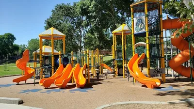
Citrus Heights
Two playgrounds plus tree-covered picnic areas, a pool and a skate park — something for every age at once.
Open · Last checked Sep 17, 2026
Before you go Big park and spread out — the two playgrounds sit on opposite sides, so pick your parking accordingly.
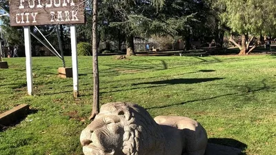
Folsom
Western-town play structures with a wheelchair-accessible ‘Play for All’ toddler zone and shade — next to the zoo sanctuary, library and miniature train.
Open · Last checked Sep 17, 2026
Before you go Pair it with the Folsom Zoo Sanctuary next door; same parking lot, easy half day.
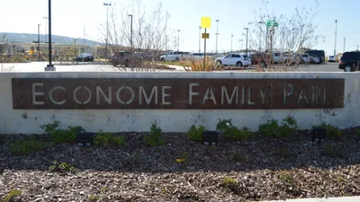
Folsom
Two distinct playgrounds — a rope course and a giant ground-level slide — with covered picnic tables and restrooms.
Open · Last checked Sep 17, 2026
Before you go The giant ground-level slide is the headline — arrive before the birthday-party rush on weekends.
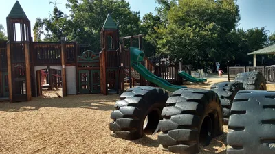
Phillip C. Cohn Park, Folsom
Castle-themed playground rebuilt in 2026 with modern, durable materials in the original castle theme — plus a little-kids area, obstacle course, tire swing and a nature trail to a pond.
Open · Last checked Sep 17, 2026
Before you go The new castle reopened in summer 2026 after the full community rebuild. Confirm current hours with the City of Folsom before you go.
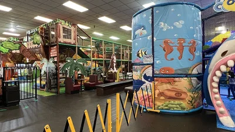
Rancho Cordova
Slides, tunnels and multi-level play structures plus themed attractions like Jungle Bungle and ball-shooting zones.
Open · Last checked Sep 17, 2026
Before you go Inexpensive and open 7 days — the easy last-minute option.
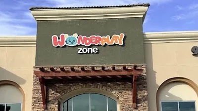
Folsom
Jungle safari-themed structures and an ocean soft-play zone, with a parent co-working space.
Open · Last checked Sep 17, 2026
Before you go Ages 0–7; opened March 2026, so everything is still new.
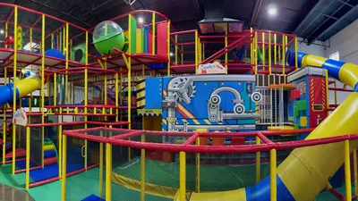
Rancho Cordova
Three-level play structure with timed ninja and Super Mario obstacle courses, a toddler area and arcades.
Open · Last checked Sep 17, 2026
Before you go Popular party venue — open play is calmest on weekday mornings.
Rancho Cordova
Hands-on water tables, air tubes and a pint-sized grocery store to play shop in. Built for birth to about eight.
Open · Last checked Sep 17, 2026
Before you go Older kids run out of things quickly, so it suits the under-eights. It isn’t open every day of the week — check before you drive.
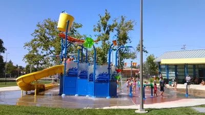
Rancho Cordova
The region’s only public splash pad with water slides — free spray area plus two slides at $1 a ride.
Open · Last checked Sep 17, 2026
Before you go Seasonal: Memorial Day through end of August. Off-season it’s just a park.
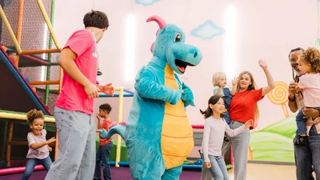
Rancho Cordova
Massive multi-level padded maze with winding slides, a dance floor and a motorcycle track.
Open · Last checked Sep 17, 2026
Before you go All-day admission with re-entry — leave for lunch and come back.
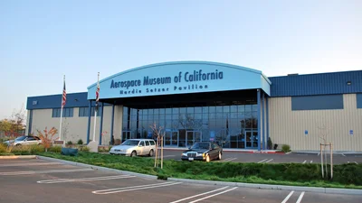
McClellan
40+ historic aircraft on a 4-acre air park — climb into real cockpits, try the flight simulators, and stand under an F-14 Tomcat. The exhibit hall has hands-on STEM exhibits for kids.
Open · Last checked Sep 22, 2026
Before you go Open Thursday through Sunday, 9am-5pm (last admission 4pm); closed Mon-Wed. Free parking.
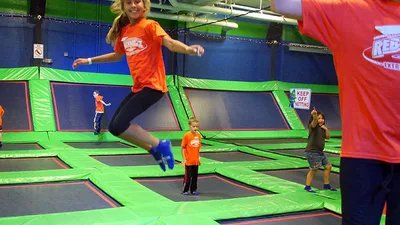
Sacramento
Massive trampoline arena with a ninja warrior course, trampoline dodgeball and an indoor playground for ages 2–12.
Open · Last checked Sep 17, 2026
Before you go The little-kid playground makes it work for mixed ages — big kids get the arena.
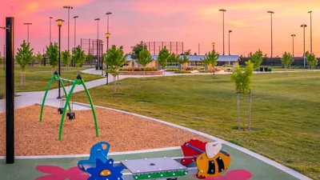
Rancho Cordova
Separate toddler and big-kid playgrounds, a rare built-in trampoline, huge sand area, web swing and a big interactive splash pad.
Open · Last checked Sep 17, 2026
Before you go Almost no shade — it’s full sun out there. Go early or late.
Arden, Sacramento
Wall-to-wall trampolines, Sky Rider, warrior course — the big-energy burn-off.
Open · Last checked Sep 17, 2026
Before you go Passes from about $12; grip socks required, buy online to skip the line.

East Sacramento
Tot lot plus an adventure playground under a shade structure — and a free shallow wading pool with a mushroom fountain in summer.
Open · Last checked Sep 17, 2026
Before you go The wading pool is closed for the 2026 season and back May 2027; the playground is still worth the trip.
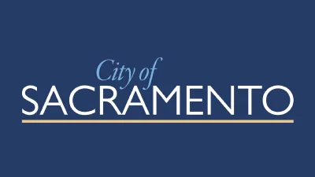
East Sacramento
Big-kid climbing structures under huge shade trees, plus a pond, rose garden, pool and restrooms — the East Sac classic.
Open · Last checked Sep 17, 2026
Before you go Weekend parking fills fast; come early and make the playground the main event.
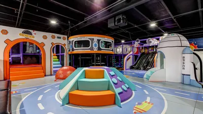
Natomas, Sacramento
Space-themed indoor playground with a 2-story climber, zip line, twin ball pits and a toddler trampoline.
Open · Last checked Sep 17, 2026
Before you go Ages 0–8, around $15 admission; known for being spotless.
400 Jibboom St, Sacramento
100+ hands-on STEAM exhibits in a renovated 1912 power station, plus the UC Davis Multiverse Theater planetarium with a 46-foot dome. Pilot a Mars rover in Destination Space or tinker in the Design Lab.
Open · Last checked Sep 18, 2026
Before you go Open 7 days a week: 10am–4pm weekdays, 10am–5pm weekends. $6/day city parking lot (pay at the kiosk or ParkMobile, code 6848). Timed-entry tickets available online.
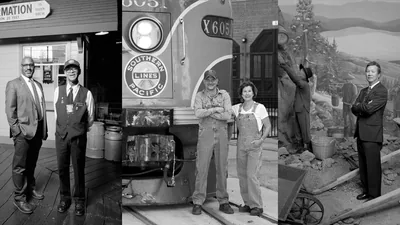
Old Sacramento
Restored locomotives and carriages you can walk through, on the Old Sacramento waterfront.
Open · Last checked Sep 17, 2026
Before you go There are engines parked outside you can look at without a ticket, which is a decent warm-up while you decide whether to go in.
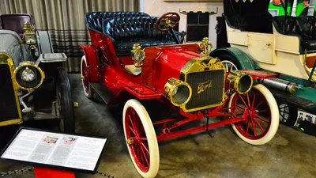
Old Sacramento Waterfront
120+ cars spanning nearly 120 years of automotive history, from brass-era classics to modern tech. Docent tours, Model T photo ops, and Sunday ride-alongs in a museum car.
Open · Last checked Sep 18, 2026
Before you go Open Wednesday through Monday, 10am-5pm (last admission 4pm); closed Tuesdays. Big warehouse, not fully climate-controlled, so dress for the day.

Sacramento
Free adventure playground run by Fairytale Town: kids build forts, climb, use real tools and help care for animals.
Open · Last checked Sep 17, 2026
Before you go After-school hours only — Wed–Fri 2:15–6:30pm, Sat 11–4. Ages 6–15 with a 5 & under area; registration required.
William Land Park, Sacramento
More than 140 species in a shaded park setting, next door to Fairytale Town.
Open · Last checked Sep 17, 2026
Before you go Heat is the limiting factor for most of the year. A morning visit is a different experience from an afternoon one.
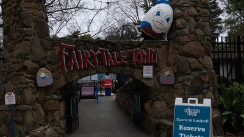
William Land Park, Sacramento
Storybook sets built at child scale — Jack and Jill’s hill, Captain Hook’s ship, farm animals to meet.
Open · Last checked Sep 17, 2026
Before you go It shares William Land Park with the zoo and Funderland, so you could chain all three. With small kids, don’t — pick one and leave happy.
William Land Park, Sacramento
A small amusement park running since 1946, with rides scaled for the youngest riders in the family.
Open · Last checked Sep 17, 2026
Before you go Several rides have height minimums, so check them before you promise anything to a three-year-old.
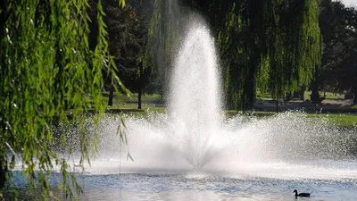
Elk Grove
Over 120 acres with playgrounds, a bike park and a lake you can fish in. The default local morning out.
Open · Last checked Sep 17, 2026
Before you go Big enough to fill a whole morning without driving anywhere else. Valley summers are genuinely hot — go early and bring more water than you think you need.
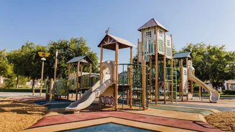
Elk Grove
Multiple playgrounds for different ages plus a water play area — family-friendly and popular for parties and events.
Open · Last checked Sep 17, 2026
Before you go The water play area runs in the warmer months only; bring towels and a change of clothes.
Elk Grove
Bowling, arcade and an indoor playground under one roof.
Open · Last checked Sep 17, 2026
Before you go The reliable answer on a rainy day or a 100°F one, which around here is most of July. Busiest late afternoon.
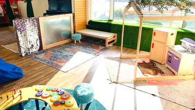
Elk Grove
Indoor playground plus children’s art studio — sensory toys, gel floor tiles, open play and parties.
Open · Last checked Sep 17, 2026
Before you go The art studio sets it apart — good for kids who bounce between active and creative.
West Sacramento
Pedal-powered railbikes on century-old tracks along the Sacramento River — 10 miles round trip through Yolo farmland, with electric assist when your legs give out. The same depot also runs themed train rides (beer, boba, murder mystery, holiday trains).
Open · Last checked Sep 30, 2026
Before you go Seated riders must be 3+ (under 3 in a front-facing carrier; no lap seating). Weekday railbikes $68.90/rider — a full bike for two is $137.80; weekends currently list the seasonal Pumpkin Patch railbike from $91.80. Check in 30–40 min early; closed-toe shoes required. Non-refundable, rides run rain or shine. Book ahead.
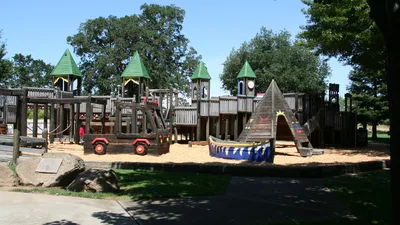
Elk Grove
Elk Grove’s only all-wooden, community-built park — towering castle structures and wooden canoes that invite hours of imaginative play.
Open · Last checked Sep 17, 2026
Before you go Built by Elk Grove residents; the wood gets hot in afternoon sun, so mornings are the move in summer.
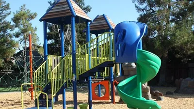
Elk Grove
A quiet neighborhood park with a rope climbing structure and separate play areas for ages 2–5 and 5–12 — the hidden gem locals love.
Open · Last checked Sep 17, 2026
Before you go It is tucked into a residential pocket, so use the map directions; no crowds and no lines for the equipment.
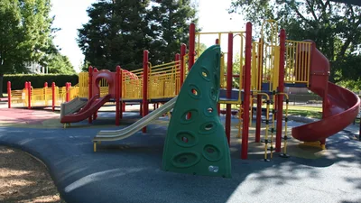
Elk Grove
A fully accessible, fire-truck themed park with ramps up to the slides, wheelchair-accessible sand tables, and a wheelchair swing — next to a real fire station.
Open · Last checked Sep 17, 2026
Before you go The wheelchair swing needs a key, so call Cosumnes CSD ahead of time to arrange access.
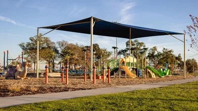
Elk Grove
Twenty acres with modern play equipment and a splash park — the one small kids ask to go back to.
Open · Last checked Sep 17, 2026
Before you go The splash park is the draw and it runs seasonally, so check before you drive over. Towels and a full change of clothes, not optional.
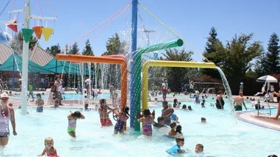
Elk Grove
Pools, slides and an interactive splash playground for the little ones.
Open · Last checked Sep 17, 2026
Before you go Open swim runs in sessions and by season rather than all day — worth confirming the times before you load the car.
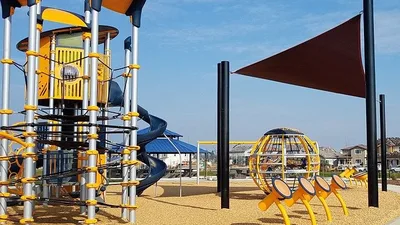
Elk Grove
Music-themed playground: separate 2–5 area and older-kid tower, musical splash pad, outdoor instruments and piano-key benches.
Open · Last checked Sep 17, 2026
Before you go The musical splash pad runs seasonally; the instruments play year-round.
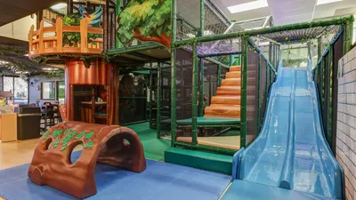
Elk Grove
Indoor playground with a trampoline, toddler areas and imaginative play — the rainy-day answer in Elk Grove.
Open · Last checked Sep 17, 2026
Before you go 4.7 stars on Yelp; check open-play hours before you go, parties can take over weekends.
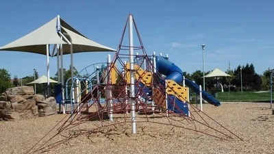
Elk Grove
Playgrounds for all ages plus a splash park for summer, with plenty of shade and grassy areas for a full-day hangout.
Open · Last checked Sep 17, 2026
Before you go The splash pad runs seasonally and outdoor concerts happen here in summer — check the CSD schedule.
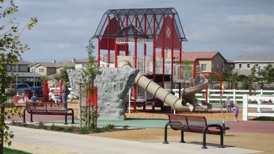
Elk Grove
A farm-themed playground honoring the Machado family dairy — a barn play structure, barnyard teeter-totters, and a giant cow statue.
Open · Last checked Sep 17, 2026
Before you go Also has an adult fitness area and shaded picnic spots, so it is easy to stretch the visit past an hour.
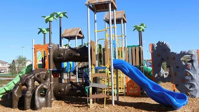
Elk Grove
Dinosaur-themed playground with a zipline, slack line, fossil footprints and a fenced sprayground.
Open · Last checked Sep 17, 2026
Before you go Sprayground runs May–September, 10am–8pm.
Nothing matches that combination — try loosening a filter.
Days out with kids rarely fall apart over the activity itself
Weekly sessions get cancelled and hours change. This site links straight to each venue's map listing, which is always current.
Summer here sits above 100°F for weeks at a stretch. Playgrounds and splash pads are a morning proposition; the Delta breeze turns up in the evening, not when you need it at two.
William Land Park holds the zoo, Fairytale Town and Funderland within a few blocks, so one busy weekend fills all three lots at once. Come early or plan to walk.
Most of these fill a half day. Leaving room for a nap and some nothing-in-particular beats cramming in another stop.